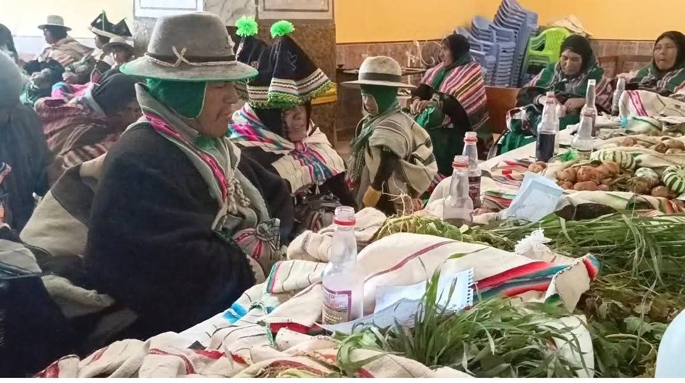
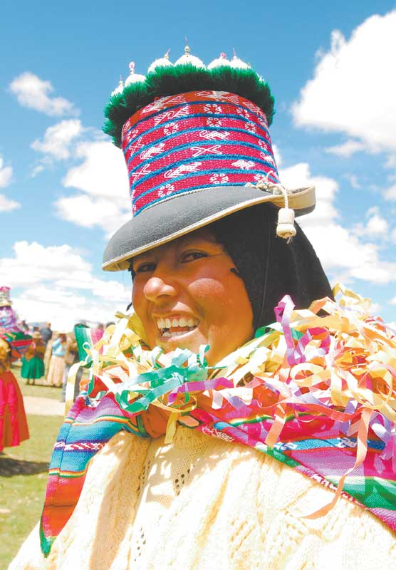

Costumbres ancestrales
Las costumbres representan la historia, los conocimientos y las tradiciones que identifican a la comunidad.
Conoce las costumbres, tradiciones, festividades y expresiones culturales que forman parte de la identidad del municipio de Colquencha.
Colquencha conserva costumbres y tradiciones que representan la identidad de su población. La cultura se expresa mediante las festividades, la música, las danzas, la vestimenta tradicional y las actividades comunitarias que se transmiten de generación en generación.
Conocer estas expresiones culturales permite valorar nuestras raíces y mantener vivas las tradiciones de nuestros antepasados.

Las costumbres representan la historia, los conocimientos y las tradiciones que identifican a la comunidad.

La música y las danzas tradicionales forman parte de las celebraciones y expresiones culturales de la población.
La vestimenta tradicional es una expresión de la identidad cultural. Sus colores, prendas y accesorios pueden representar las costumbres y el patrimonio cultural de la región.
Conoce más sobre las expresiones culturales mediante los siguientes videos.
Preservar la cultura permite que las nuevas generaciones conozcan sus raíces, respeten sus costumbres y valoren la identidad de Colquencha. Por eso, es importante compartir y transmitir estas tradiciones.
Visita la página oficial de la comunidad de Colquencha para conocer su oferta cultural, turistica.
Visitar página oficial de facebook rPO colquencha